Nej, ikke uden videre. AI kan generere oplysninger, der lyder overbevisende, men som er forkerte eller opdigtede. Det kaldes ofte en AI-hallucination, selv om modellen ikke hallucinerer i menneskelig forstand. Det sker, fordi en sprogmodel ikke ved, hvad der er sandt, men beregner, hvilke ord der statistisk set sandsynligvis følger efter hinanden. Hvis den mangler sikre oplysninger, kan den derfor stadig formulere et flydende og overbevisende svar, som viser sig at være forkert. Den kan også gengive eller forstærke bias fra det materiale, den er trænet på.
Når du bruger AI, er det vigtigt at være kildekritisk. Spørg dig selv, hvor oplysningerne kommer fra, og brug lidt tid på at tjekke vigtige påstande i en anden, uafhængig kilde. Du kan også stille det samme spørgsmål til to forskellige AI-modeller. Hvis de svarer forskelligt, er det et tegn på, at du bør undersøge svaret nærmere i stedet for bare at stole på det.
- Andrejsen & Skov (2013). Som anvendt i kapitel 5, AI-kørekort for undervisere (kildekritik-metode).
- Dahl (1999). Som anvendt i kapitel 5, AI-kørekort for undervisere (kildekritik-metode).